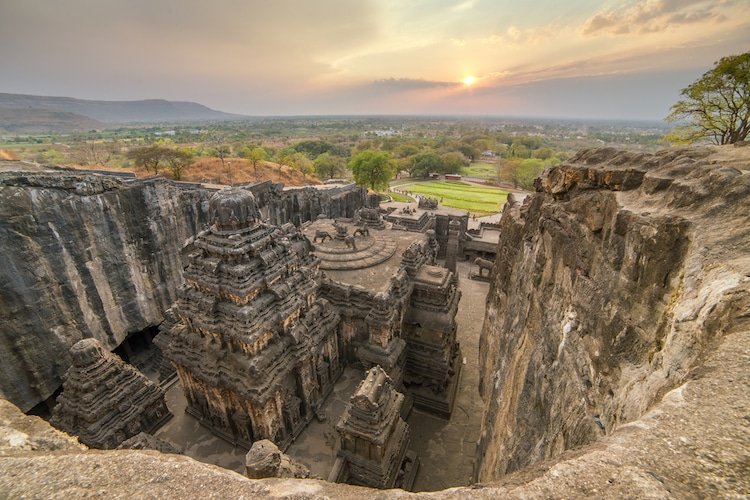
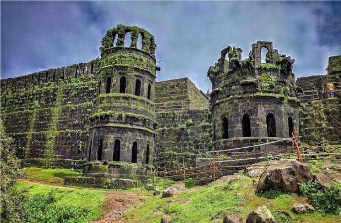
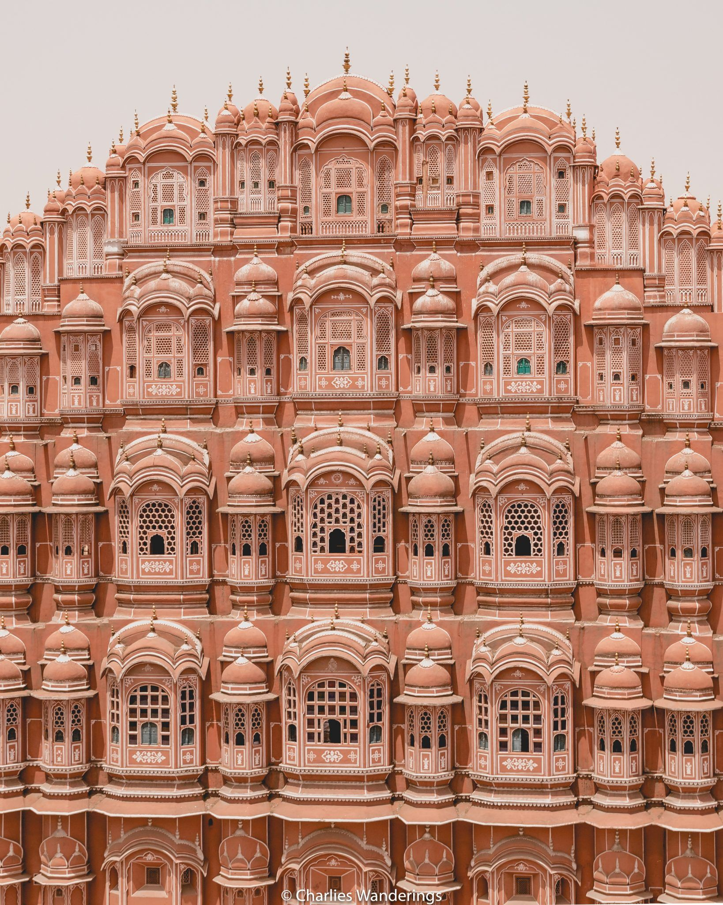

Kailasa Temple at the Ajanta and Elora Caves
The Kailasha or Kailashanatha temple is the Hindu temple of Lord Shiva and the largest of the rock-cut Hindu temples at the Ellora Caves, Aurangabad District, Maharashtra, India.
It was fromed from a single block of stone and carved from top-down into the ground. It is located in Elora as a part of the large,histotical caves and temples in Ajenta and Elora.
Raigad Fort
Raigad is a hill fort situated in Mahad, Raigad district of Maharashtra, India. It is one of the strongest fortresses on the Deccan Plateau. Raigad Fort is a hill fort in the Mahad, Raigad district of Maharashtra, India. The Raigad Fort was seized by Chhatrapati Shivaji Maharaj and made it his capital in 1674 when he was crowned as the King of a Maratha Kingdom which later developed into the Maratha Empire, eventually covering much of western and central India.
Hawa Mahal
The Hawa Mahal is a palace in the city of Jaipur, India. Built from red and pink sandstone, the palace sits on the edge of the City Palace, Jaipur,
The structure was built in 1799 by the Maharaja Sawai Pratap Singh, the grandson of Maharaja Sawai Jai Singh, who was the founder of the city of Jaipur, India.[1] He was so inspired by the unique structure the of Khetri Mahal that he built this grand and historical palace.